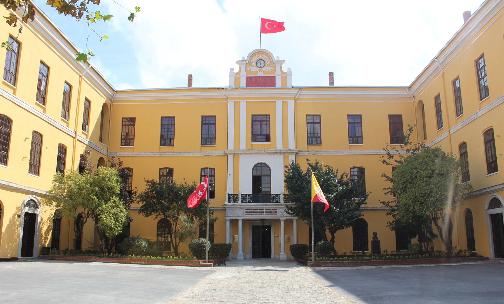

Galatasaray High school
Founded in 1481 by Bayezid the 2nd, Galatasaray High school is the oldest high school in Turkey. It is located in the heart of Istanbul, Beyoğlu with its 153 year old campus. Galatasaray as an institution has always viewed social sciences in a special light as creating an output for Turkish bureaucrats and democrats has always been one of the central roles of Galatasaray. Consequently, it has created an environment that fosters learning and self-improvement. Valuing extracurricular activities along with academics, Galatasaray High School hosts a variety of activities that give students an opportunity to excel at addressing an audience, debating, and improving their command of the English(and in other activities French) language.As it was stated previously Galatasaray High School, with its historic campus, will provide an astonishing atmosphere to any participants.
